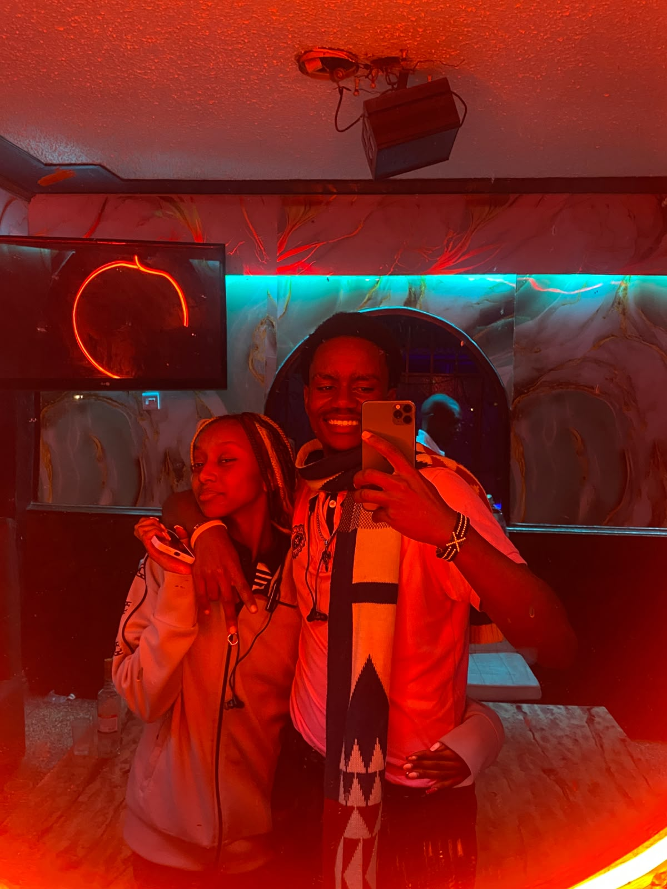
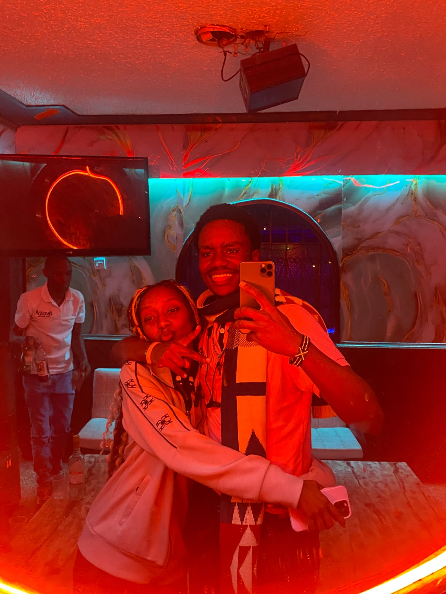
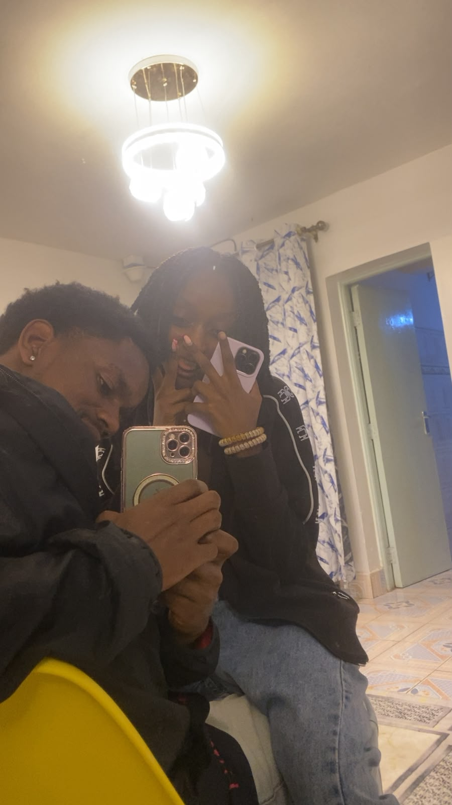
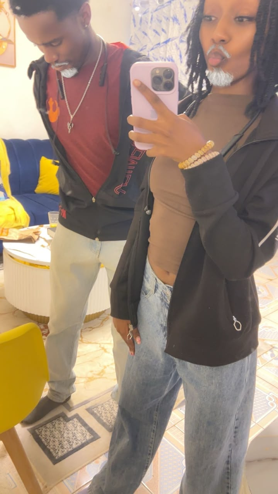
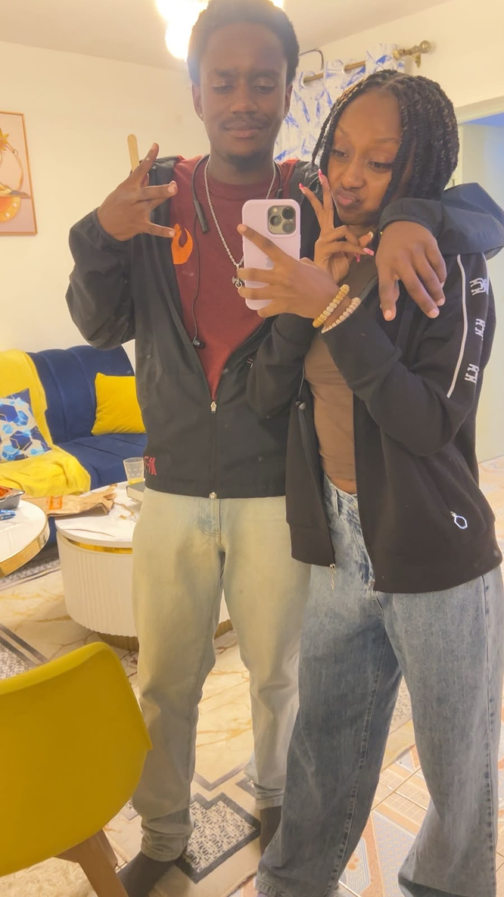
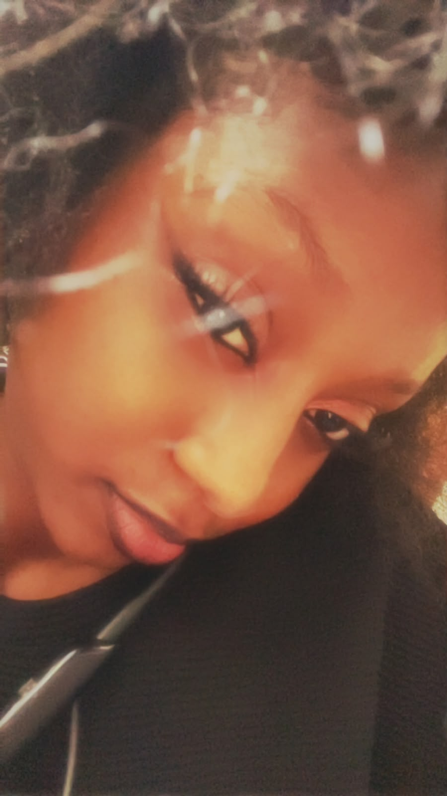

Chapter two · Moments worth keeping
Little Memories
My lovee, these pictures are little pieces of our world. Every time I look at them, I get another reason to smile because I get to share these moments with you.






I don't need every day to be perfect. I just want more days with you in them. ❤️